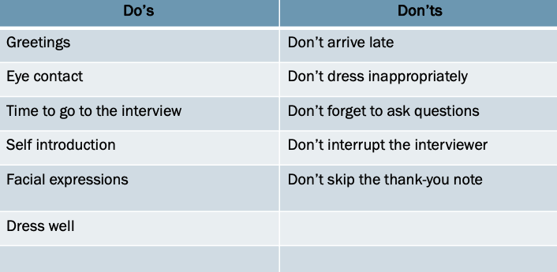

JOB HUNTING

Professional Skills Module Conducted by Mrs. Ishari Ravihari
The Professional Skills module, led by the esteemed Mrs. Ishari Ravihari, offers an insightful and engaging experience aimed at empowering individuals with the essential skills for success in today's fast-paced professional world. With her extensive expertise and dynamic approach, Mrs. Ravihari guides students through the crucial aspects of soft skills that go hand-in-hand with technical expertise to shape well-rounded professionals.
Job Interview
Mastering the art of job hunting has equipped me with invaluable skills for my professional journey. From crafting tailored applications that resonate with potential employers to showcasing my unique strengths and aligning them with specific roles, this experience has been transformative. It's not just about finding a job—it's about strategically positioning myself to seize opportunities that align with my passions and aspirations.
Activity 1
Watch the video of the interview and complete the following table with the do’s and the don’ts of the interview process?
Activity 2
Compile a list of possible questions that can be asked by an interviewer from the interviewee.
Tell me about yourself.
Why do you want to work for this company?
What are your strengths and weaknesses?
How does your experience relate to the role?
How do you prioritize tasks under pressure?
What do you know about our company?
Do you have any questions for us?
Write a list of questions often asked by the candidates from the interviewer.
What does a typical day in this role look like?
What challenges might I face in this role?
What is the company culture like?
What are the company’s goals for the next few years?
What are the next steps in the interview process?